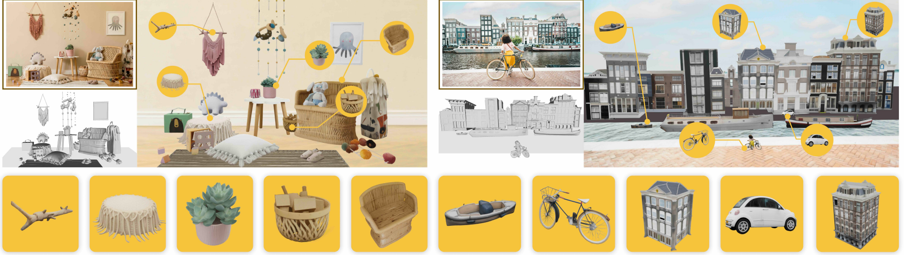
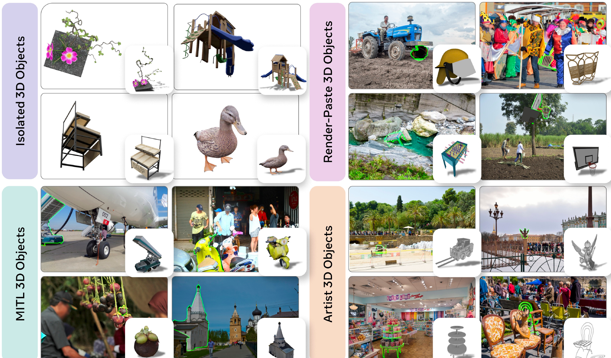
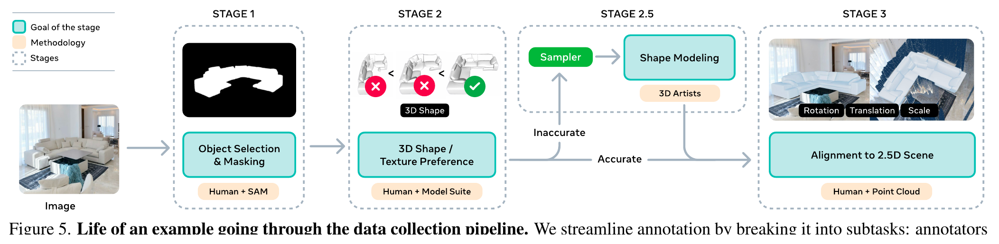
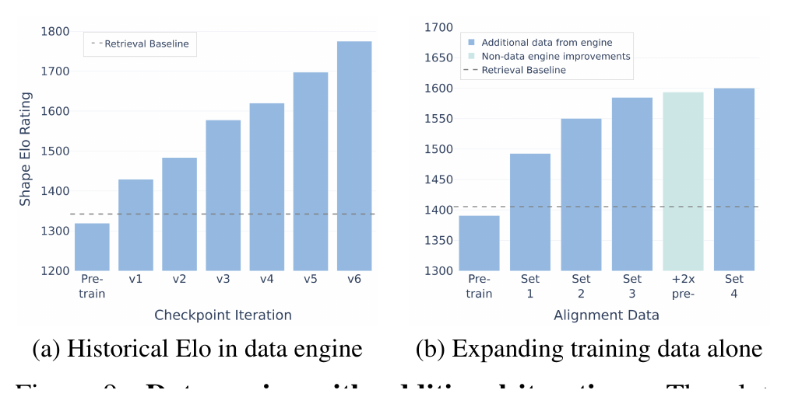
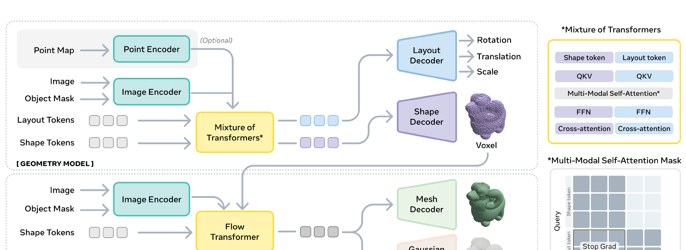
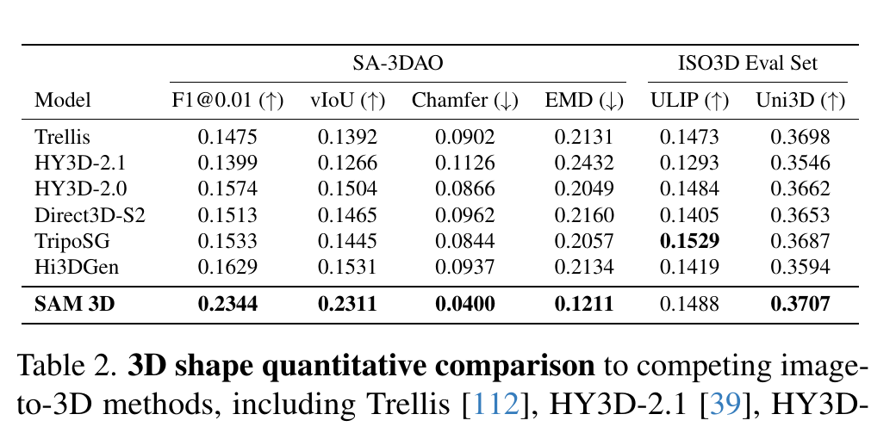
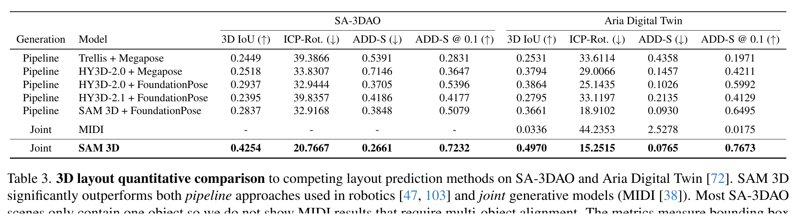
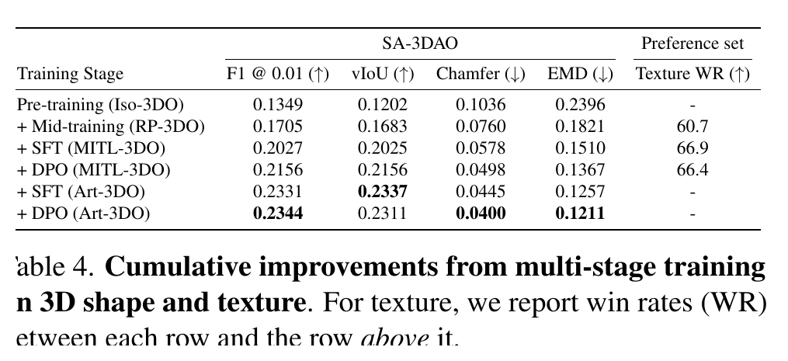
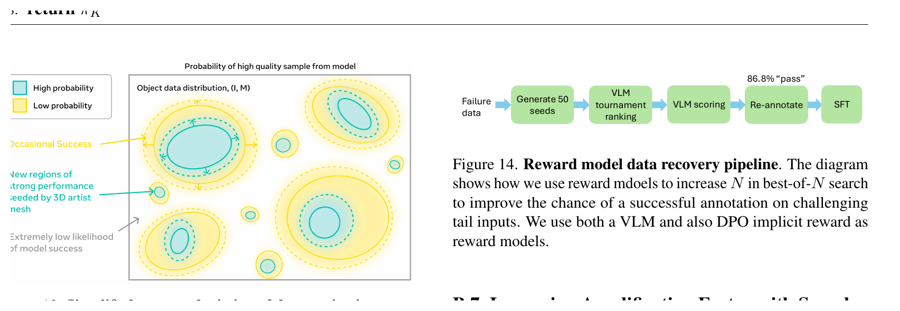

SAM 3D: 3Dfy Anything in Images
Root question. What would it take for a single natural image to become a usable 3D scene, not just a nice isolated 3D asset? SAM 3D answers that question by predicting three things for each masked object: shape, texture, and layout, where layout means rotation, translation, and scale in the camera coordinate system. A human-preference win rate is the fraction or ratio of blinded annotator choices that prefer one model's output over another; it is not accuracy, not error, and not a geometric metric. The headline claim is therefore calibrated: SAM 3D reports a 5:1 human-preference win rate on real-world objects and 6:1 on scene reconstruction, against prior image-to-3D and scene-reconstruction systems. The comparison tables name the relevant baselines: Trellis, HY3D-2.1, HY3D-2.0, Direct3D-S2, TripoSG, and Hi3DGen for shape; Trellis + Megapose, HY3D-2.0 + Megapose, HY3D-2.0 + FoundationPose, HY3D-2.1 + FoundationPose, SAM 3D + FoundationPose, and MIDI for layout; and Trellis, Hunyuan3D-2.1, Hunyuan3D-2.0, and Unitex for texture preference. On the new SA-3DAO benchmark, which contains 1,000 artist-created object meshes aligned to natural images, SAM 3D also improves the geometric metrics in Table 2 and the layout metrics in Table 3. The paper's core bet is not merely a bigger model; it is a data engine where humans choose and align 3D candidates, the model learns from those choices, and the improved model returns to generate better candidates.
{kind=link}

Q: why is the first number on the page a preference ratio rather than a metric?
Guide: real-world single-image 3D has two different kinds of evidence. Tables compare against ground truth where the paper has ground truth. Human preference compares perceptual quality when a single scalar metric is too narrow.
A: The 5:1 claim means people preferred SAM 3D outputs by that ratio in blinded comparisons. It does not mean 5x lower error.
Takeaway: Read the preference ratio as a human judgment result, then read Tables 2 and 3 for metric-backed shape and layout claims.
1. Motivation: why natural images break image-to-3D systems
Single-image 3D reconstruction is an inverse problem. The photograph collapses a 3D object into pixels, so the back side, true scale, and many occluded parts are missing. A model can still succeed because images carry pictorial cues: shading, texture, object familiarity, scene context, and physical support relationships.
The hard part is data. Synthetic 3D assets can be rendered in unlimited views, but those images usually show centered, isolated objects. Natural images are different: objects may be small, occluded, cluttered, or only partially visible. General annotators can draw a mask around such an object, but they usually cannot create a faithful 3D mesh from scratch. SAM 3D is built around that asymmetry. People may not be able to model the mesh, but they can often choose the best mesh from candidates and align it to a point cloud.
Q: if humans are good at understanding 3D from one image, why not just ask humans for the ground truth?
Guide: separate recognition from production. Recognizing the best candidate is much easier than authoring a mesh.
A: The paper turns human judgment into supervision. Annotators pick and rate candidate meshes; artists handle the hardest failures.
Takeaway: The data engine matters because it converts an impossible annotation task into a scalable verification task.
2. Contribution: what is new, and what is the larger inference?
The authors make four explicit contributions. First, SAM 3D predicts full object shape, texture, and camera-relative pose from a single image and mask. Second, they build a model-in-the-loop data pipeline for shape, texture, and pose annotation at large scale. Third, they train with a staged recipe that combines synthetic pretraining, semi-synthetic mid-training, supervised finetuning, preference optimization, and distillation. Fourth, they introduce SA-3DAO, a real-world benchmark of 1,000 artist-created 3D objects paired with natural images.
The larger inference is that SAM 3D treats 3D reconstruction more like modern foundation-model alignment than like a one-shot supervised prediction task. The model first learns broad synthetic priors, then the data engine repeatedly turns the current model into a better annotator source. That is why the paper spends as much effort on collection and post-training as on architecture.
Q: is the novelty mostly the transformer architecture?
Guide: look for the bottleneck the paper keeps returning to. It is not only model capacity; it is the missing real-image 3D supervision.
A: The architecture is important, but the main novelty is the combination of model, data engine, and staged alignment.
Takeaway: SAM 3D is best read as a training-and-data system for real-world 3D, not as a standalone network block.
3. Datasets: what supervision does the model actually see?
{kind=link}

Iso-3DO is the isolated-object pretraining set. It contains 2.7 million object meshes from Objaverse-XL and licensed datasets, rendered from 24 viewpoints into 64.8 million samples for the Geometry model. RP-3DO is the render-paste mid-training set. It composites rendered 3D assets into natural images, producing Flying Occlusions and Object Swap variants that teach mask following, occlusion completion, translation, and scale. The main paper summarizes RP-3DO as 61 million samples with 2.8 million unique meshes; the appendix breaks this into 55.1 million Flying Occlusion samples and 5.95 million Object Swap-Random samples.
MITL-3DO is the model-in-the-loop real-image data. Over the project lifetime, the data engine produced 3.14 million trainable shapes, 1.23 million layout samples, 100K trainable textures, and more than 7 million pairwise preferences. Art-3DO is the professional-artist set used for hard examples that the candidate suite cannot solve. SA-3DAO is separate from training: it is a benchmark of 1,000 untextured artist-created objects aligned to selected natural images.
Table-marker disclosure
The training-stage table in the paper uses † for RP-3DO Flying Occlusion, ‡ for RP-3DO Object Swap-Random, § for RP-3DO Object Swap-Annotated, and * for optional pointmap conditioning. Tables 2-4 below do not use dagger or double-dagger markers.
Q: why use synthetic, semi-synthetic, real, and artist data instead of one big dataset?
Guide: each source gives one thing the others cannot. Synthetic data gives scale; real data gives domain match; artists fill tail failures.
A: No single source covers the problem. The curriculum stacks cheap breadth first and expensive realism later.
Takeaway: The dataset design is the method's first mechanism: it makes real-world 3D supervision affordable enough to train on.
4. Pipeline: how does one image become one training example?
{kind=link}

Stage 1 chooses the target image and object mask $(I,M)$. The image sources include large web imagery, video data, and curated real-world sets; masks come from existing annotations and human selection. Stage 2 collects shape and texture $(S,T)$. Candidate meshes come from retrieval, text-to-3D generation, image-to-3D generation, and the current SAM 3D model. Annotators rank candidates, choose the best one, and reject examples below a quality threshold. Stage 2.5 sends hard failures to professional 3D artists. Stage 3 aligns the chosen object to a point cloud by labeling rotation $R$, translation $t$, and scale $s$.
The paper frames this as an API. Given the current model $q(S,T,R,t,s\mid I,M)$, the data engine returns high-quality training samples $D^+$, ratings $r\in[0,1]$, and rejected candidates $D^-$ for preference learning. The key design choice is best-of-$N$ sampling. Instead of asking a human to create a mesh, the system samples multiple candidates and asks the human to select the best viable one.
{kind=link}

Q: what makes this a flywheel instead of ordinary labeling?
Guide: follow the direction of improvement. The model helps collect data, and that data trains the next model.
A: Better models make better candidates, so humans can accept more examples, which trains an even better model.
Takeaway: The annotation rate is a learned property of the system, not a fixed property of the dataset.
5. Method: what does SAM 3D predict, and why two models?
{kind=link}

The input is an image $I$ and an object mask $M$. The target output is shape $S$, texture $T$, and layout $(R,t,s)$, where $R$ is rotation, $t$ is translation, and $s$ is scale. Because the projection from 3D to 2D loses information, the paper treats reconstruction as a conditional distribution rather than a deterministic inverse:
The Geometry model handles $p(O,R,t,s\mid I,M)$, where $O\in\mathbb{R}^{64^3}$ is a coarse voxel shape. It uses DINOv2 features from a cropped object, the cropped mask, the full image, and the full-image mask. It can also condition on a 2.5D pointmap when available. The model is a 1.2B-parameter flow transformer with a Mixture-of-Transformers design: shape tokens have their own transformer stream, layout parameters share another stream, and multimodal self-attention lets them exchange information.
The Texture & Refinement model handles $p(S,T\mid I,M,O)$. It takes active voxels from the coarse geometry and uses a 600M-parameter sparse latent flow transformer to refine shape detail and synthesize texture. The final latent can decode either to a mesh or to 3D Gaussian splats through separately trained decoders that share the same encoder and latent space.
How to read Eq. 2
$c=(I,M)$ is the image-and-mask conditioning. For each modality $m$, the model predicts a velocity field that moves noise toward the ground-truth 3D annotation. The weights $\lambda_m$ balance shape and layout losses.
Preference alignment then uses Direct Preference Optimization, abbreviated DPO, on preferred and rejected outputs. The paper applies DPO to Geometry shape prediction and to Texture & Refinement predictions, using preference data from Stage 2 while removing negatives generated by non-SAM 3D systems so the negatives stay in distribution.
Q: why predict shape and layout together before texture?
Guide: rotation only means something once a shape exists, and texture depends on the geometry it covers.
A: Coarse shape and pose must agree first. Texture is added after the object has a stable 3D support.
Takeaway: The two-stage design is not just modularity; it keeps geometry, pose, and appearance in the order the task needs.
6. Training: how does the staged recipe fit together?
The Geometry model starts with Iso-3DO pretraining: object-centric crops, shape and rotation supervision, learning rate $10^{-4}$, 64.8M samples, and 2.5T tokens. Mid-training adds RP-3DO Flying Occlusions and Object Swap-Random plus ProcThor. This introduces full-image context, masks, pointmaps, occlusion, translation, and scale, for 55.1M Flying Occlusion samples and 5.95M Object Swap-Random samples. Supervised finetuning then uses MITL-3DO and Art-3DO real-image labels, with 0.6M samples and 0.9T tokens. Alignment uses MITL preferences, with 88K meshes, 31K images, and 44K samples in the detailed hyperparameter table.
The Texture & Refinement model follows the same logic. It pretrains on Trellis500K, mid-trains on RP-3DO Flying Occlusion and Object Swap-Annotated, finetunes on MITL textures, and aligns with MITL texture preferences. The paper reports 350K meshes and 1.1T tokens for texture pretraining, 2.4M samples and 1T tokens for mid-training, 100K SFT samples, and 73K alignment samples.
The disclosed compute is hardware and epoch counts, not wall-clock time. Geometry pretraining uses 512 A100 GPUs for 200 epochs. Geometry mid-training uses 320 A100 GPUs for 50 epochs, then 128 A100 GPUs for another 50 epochs, then 256 A100 GPUs for 12 Object Swap-Random epochs. Geometry SFT uses 128 H200 GPUs for 100 epochs, and DPO uses 128 A100 GPUs for 1 epoch. Texture pretraining uses 256 A100 GPUs for 245 epochs, mid-training uses 256 A100 GPUs for 80 epochs, SFT uses 192 A100 GPUs for 89 epochs, and texture DPO uses 128 A100 GPUs for 2 epochs. Wall-clock training time is Not stated in the paper. GPU-hours would only be a rough estimate from the disclosed numbers, not an actual bill, so this page does not compute one.
For inference speed, the paper distills the Geometry model from 25 function evaluations to 4. It describes this as enabling sub-second shape and layout from the Geometry model. Exact end-to-end latency for the full shape-texture pipeline is Not stated in the paper.
Q: why not train only on the final real-image labels?
Guide: real-image 3D labels are valuable but expensive. Synthetic data is cheap but mismatched.
A: Synthetic stages build broad priors; real stages steer those priors to natural images and human preference.
Takeaway: The staged recipe is a cost allocation strategy: spend cheap tokens for breadth, then expensive labels for alignment.
7. Experiments: which claims do the tables support?
The evaluation uses several different tests, so like-for-like comparison matters. SA-3DAO gives artist-created 3D ground truth and supports geometric shape metrics. ISO3D lacks geometric ground truth, so the paper reports perceptual image-shape similarities through ULIP and Uni3D. ADT supports layout evaluation with pointmaps. Human preference tests use blinded pairwise comparisons and report which output annotators prefer.
{kind=link}

| Model | SA-3DAO F1@0.01 | SA-3DAO vIoU | SA-3DAO Chamfer | SA-3DAO EMD | ISO3D ULIP | ISO3D Uni3D |
|---|---|---|---|---|---|---|
| Trellis | 0.1475 | 0.1392 | 0.0902 | 0.2131 | 0.1473 | 0.3698 |
| HY3D-2.1 | 0.1399 | 0.1266 | 0.1126 | 0.2432 | 0.1293 | 0.3546 |
| HY3D-2.0 | 0.1574 | 0.1504 | 0.0866 | 0.2049 | 0.1484 | 0.3662 |
| Direct3D-S2 | 0.1513 | 0.1465 | 0.0962 | 0.2160 | 0.1405 | 0.3653 |
| TripoSG | 0.1533 | 0.1445 | 0.0844 | 0.2057 | 0.1529 | 0.3687 |
| Hi3DGen | 0.1629 | 0.1531 | 0.0937 | 0.2134 | 0.1419 | 0.3594 |
| SAM 3D | 0.2344 | 0.2311 | 0.0400 | 0.1211 | 0.1488 | 0.3707 |
On SA-3DAO, the shape result is clear: SAM 3D improves F1@0.01 from the best baseline 0.1629 to 0.2344, vIoU from 0.1531 to 0.2311, Chamfer from 0.0844 to 0.0400, and EMD from 0.2049 to 0.1211. On ISO3D, SAM 3D is best on Uni3D but not on ULIP; TripoSG has the highest ULIP at 0.1529. The paper also notes that TripoSG uses a significantly higher mesh resolution, which can be rewarded by perceptual metrics. That caveat belongs to ISO3D perceptual comparison, not to SA-3DAO geometry.
{kind=link}

| Generation | Model | SA-3DAO 3D IoU | SA-3DAO ICP-Rot. | SA-3DAO ADD-S | SA-3DAO ADD-S @ 0.1 | ADT 3D IoU | ADT ICP-Rot. | ADT ADD-S | ADT ADD-S @ 0.1 |
|---|---|---|---|---|---|---|---|---|---|
| Pipeline | Trellis + Megapose | 0.2449 | 39.3866 | 0.5391 | 0.2831 | 0.2531 | 33.6114 | 0.4358 | 0.1971 |
| Pipeline | HY3D-2.0 + Megapose | 0.2518 | 33.8307 | 0.7146 | 0.3647 | 0.3794 | 29.0066 | 0.1457 | 0.4211 |
| Pipeline | HY3D-2.0 + FoundationPose | 0.2937 | 32.9444 | 0.3705 | 0.5396 | 0.3864 | 25.1435 | 0.1026 | 0.5992 |
| Pipeline | HY3D-2.1 + FoundationPose | 0.2395 | 39.8357 | 0.4186 | 0.4177 | 0.2795 | 33.1197 | 0.2135 | 0.4129 |
| Pipeline | SAM 3D + FoundationPose | 0.2837 | 32.9168 | 0.3848 | 0.5079 | 0.3661 | 18.9102 | 0.0930 | 0.6495 |
| Joint | MIDI | - | - | - | - | 0.0336 | 44.2353 | 2.5278 | 0.0175 |
| Joint | SAM 3D | 0.4254 | 20.7667 | 0.2661 | 0.7232 | 0.4970 | 15.2515 | 0.0765 | 0.7673 |
Layout is where the joint model matters most. On SA-3DAO, SAM 3D raises 3D IoU from the best pipeline baseline 0.2937 to 0.4254 and ADD-S @ 0.1 from 0.5396 to 0.7232. On ADT, it raises 3D IoU from 0.3864 to 0.4970 and ADD-S @ 0.1 from 0.6495 to 0.7673. MIDI is not shown for SA-3DAO because most SA-3DAO scenes contain one object and MIDI requires multi-object alignment.
Q: do the quantitative tables prove the same thing as the 5:1 preference claim?
Guide: keep metric-backed claims and human-judgment claims separate.
A: No. The tables prove better reported metrics on SA-3DAO and ADT. The 5:1 (objects) and 6:1 (scenes) ratios are separate blinded human-preference results.
Takeaway: The strongest reading is combined evidence: metrics improve where ground truth exists, and preference tests favor SAM 3D where perception matters.
8. Ablations: which stages actually move the result?
The main ablation asks whether real-world performance emerges gradually from the staged recipe. It does. The table below adds stages one at a time. Shape metrics improve almost monotonically through pretraining, mid-training, MITL-3DO SFT, MITL-3DO DPO, Art-3DO SFT, and Art-3DO DPO.
{kind=link}

| Training stage | SA-3DAO F1 @ 0.01 | SA-3DAO vIoU | SA-3DAO Chamfer | SA-3DAO EMD | Preference set Texture WR |
|---|---|---|---|---|---|
| Pre-training (Iso-3DO) | 0.1349 | 0.1202 | 0.1036 | 0.2396 | - |
| + Mid-training (RP-3DO) | 0.1705 | 0.1683 | 0.0760 | 0.1821 | 60.7 |
| + SFT (MITL-3DO) | 0.2027 | 0.2025 | 0.0578 | 0.1510 | 66.9 |
| + DPO (MITL-3DO) | 0.2156 | 0.2156 | 0.0498 | 0.1367 | 66.4 |
| + SFT (Art-3DO) | 0.2331 | 0.2337 | 0.0445 | 0.1257 | - |
| + DPO (Art-3DO) | 0.2344 | 0.2311 | 0.0400 | 0.1211 | - |
Two checks support the same story. A knockout table in the appendix reports drops when training on MITL-3DO, Art-3DO, or DPO is removed. A pointmap ablation reports that shape preference on LVIS is almost unchanged: the pointmap-conditioned and non-pointmap versions are each selected 48% of the time. That means pointmaps matter for layout evaluation, but they are not the main driver of shape preference in that test.
{kind=link}

Q: do the ablations support the paper's data-engine thesis?
Guide: look for gains that appear when the distribution moves closer to natural images.
A: Yes. RP-3DO, MITL-3DO, and Art-3DO each add performance, and DPO further refines preference-sensitive failures.
Takeaway: The table backs the claim that real-world 3D quality emerges from staged data and alignment, not from synthetic pretraining alone.
9. Limitations: where should the result not be overread?
The paper names three main limitations. First, resolution is bounded by the architecture. The Geometry model uses a coarse $64^3$ shape resolution, and the Gaussian decoders use up to 32 splats per occupied voxel. That is enough for many objects, but thin structures, hands, faces, and other high-acuity details can show distortion or missing detail.
Second, object layouts are predicted one object at a time. SAM 3D does not jointly reason about contact, physical stability, interpenetration, or co-alignment such as multiple objects lying on the same ground plane. Multi-object prediction with appropriate losses is left as future work. Third, texture prediction does not know the predicted pose; for rotationally symmetric objects, the texture can be effectively rotated into an incorrect orientation.
There are also evaluation boundaries. SA-3DAO is a strong benchmark because it uses professional 3D artists, but it contains 1,000 untextured objects. ISO3D lacks geometric ground truth, so ULIP and Uni3D are perceptual similarities, not mesh-accuracy metrics. Human preference tests measure annotator choice under the paper's protocol; they should not be converted into accuracy or error.
Q: what is the most tempting but wrong headline?
Guide: keep the paper's scope attached to the evidence.
A: The wrong headline is "5x more accurate." The right headline is "at least 5:1 preferred by humans, with better reported shape and layout metrics on the stated benchmarks."
Takeaway: The paper is strongest on real-image preference, SA-3DAO shape, and ADT/SA-3DAO layout; it is not a solved theory of all single-image 3D.
10. Summary: how to carry the paper forward
One sentence. SAM 3D argues that single-image 3D reconstruction becomes practical when a generative 3D model is trained with a human-verified data flywheel, not when synthetic assets alone are scaled.
| Question | Evidence | Judgment |
|---|---|---|
| Can the model recover object shape from natural images? | SA-3DAO Table 2: F1 0.2344, vIoU 0.2311, Chamfer 0.0400, EMD 0.1211. | Yes, against the listed image-to-3D baselines. |
| Can it place objects in the scene? | Table 3: SAM 3D leads on both SA-3DAO and ADT layout metrics. | Yes, and the joint model beats pipeline baselines in the reported setup. |
| Does the staged training recipe matter? | Table 4: performance climbs from Iso-3DO pretraining to Art-3DO + DPO. | Yes, the data curriculum is load-bearing. |
| What should not be overclaimed? | Preference is not accuracy; ISO3D has no geometric GT; layout still lacks joint physical reasoning. | Keep the claim tied to the exact benchmark and protocol. |
Q: what is the simplest correct takeaway?
Guide: compress the paper to the one design lesson that survives the tables and caveats.
A: SAM 3D works because it couples a 3D generative model to a data engine that turns human preferences into real-image 3D supervision.
Takeaway: For real-world 3D, the data flywheel is not support infrastructure; it is part of the method.
References
Q: what sources does this page rely on?
Guide: the supplied PDF is the source of truth for formulas, tables, numbers, and caveats.
A: The page uses the SAM 3D arXiv PDF and the supplied local SAM 3D visual assets. Missing details are marked as Not stated in the paper.
Takeaway: No external citation is used to strengthen a claim beyond what the paper states.
- SAM 3D Team, Xingyu Chen, Fu-Jen Chu, Pierre Gleize, Kevin J Liang, Alexander Sax, Hao Tang, Weiyao Wang, Michelle Guo, Thibaut Hardin, Xiang Li, Aohan Lin, Jiawei Liu, Ziqi Ma, Anushka Sagar, Bowen Song, Xiaodong Wang, Jianing Yang, Bowen Zhang, Piotr Dollar, Georgia Gkioxari, Matt Feiszli, and Jitendra Malik. SAM 3D: 3Dfy Anything in Images. arXiv:2511.16624v2, 2 Jun 2026.
- Metrics, tables, formulas, training details, benchmark descriptions, and limitations are taken from the supplied 44-page PDF.
- Embedded visuals use the supplied local SAM 3D assets in this repository.